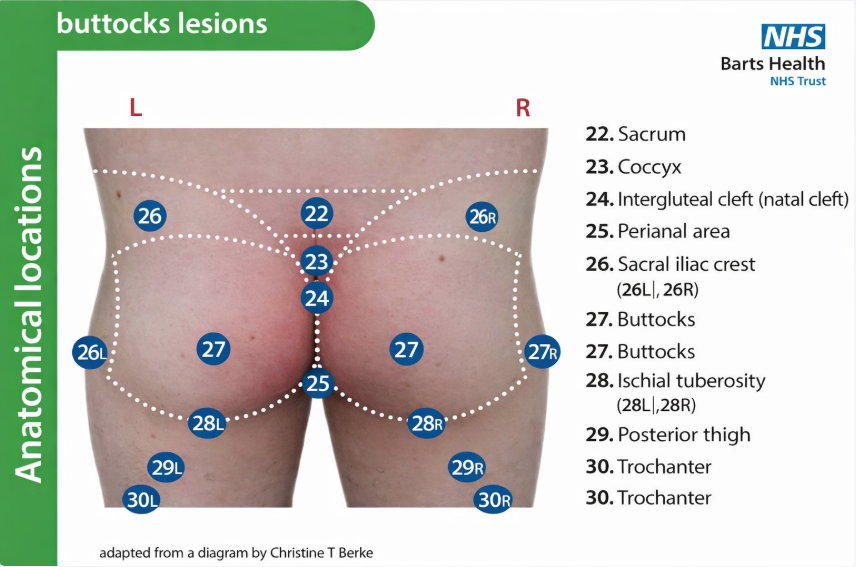
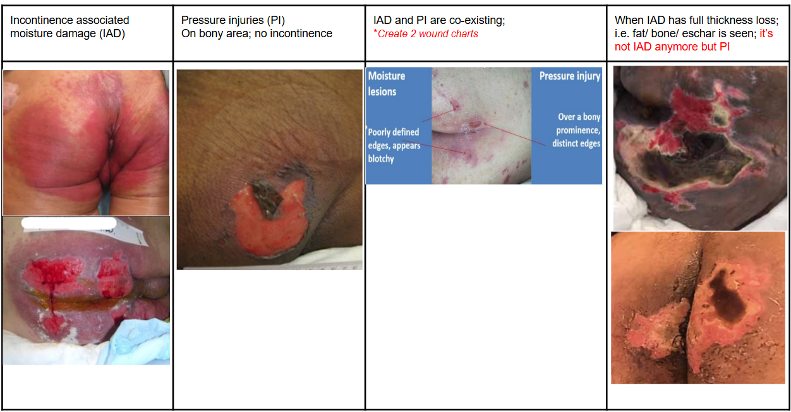
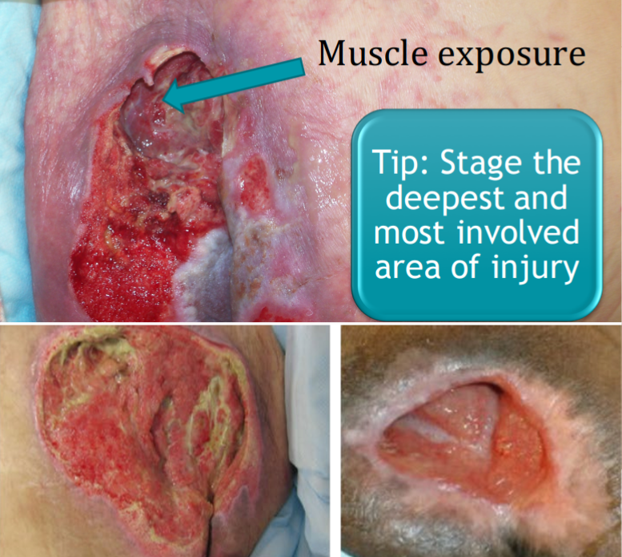
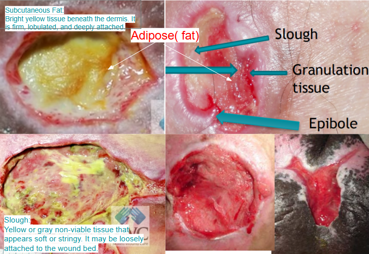
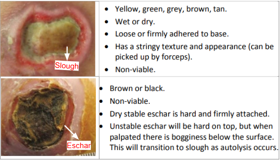
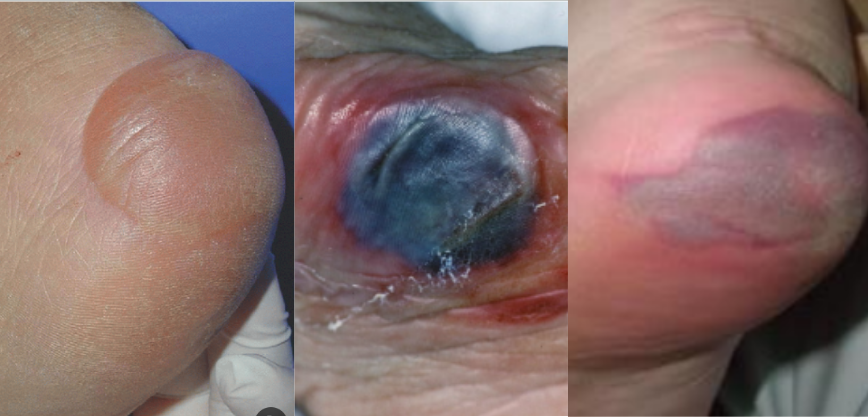
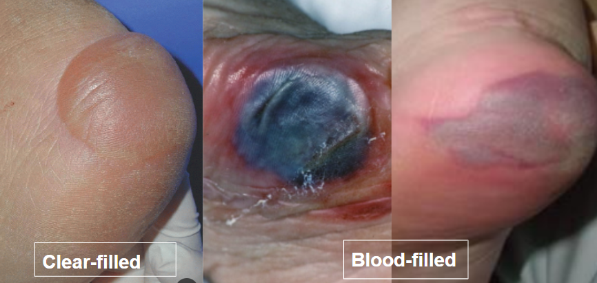
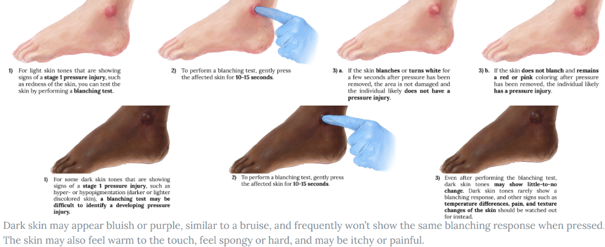
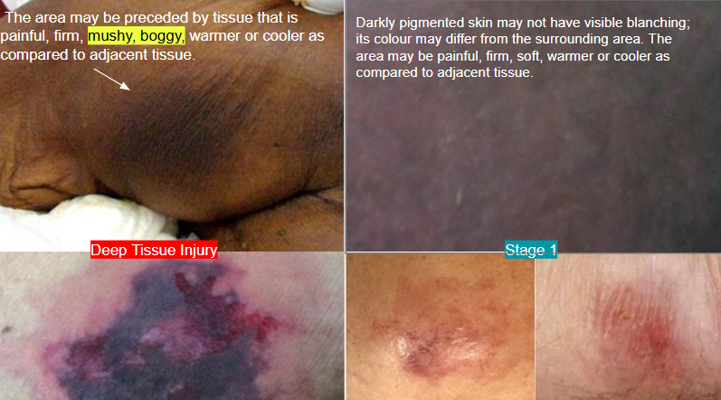

Start with your best guess, answer the decision questions, then get a ready-to-print intervention checklist.
Assess and document each wound separately if necessary and carefully noting the anatomical location.


In incontinent and immobile patients, pressure injuries and IAD may co-exist—even when wounds are close together. Assess and document each wound separately, carefully noting the anatomical location.
Common shear risk sites: sacrum/coccyx, ischial tuberosities, heels, posterior thighs, elbows — especially if sliding down in bed/chair or being boosted without lift.
Examples: trauma/fall, surgical wound, vascular ulcer (PAD/PVD), diabetic ulcer, infection/cellulitis, dermatitis/rash.






